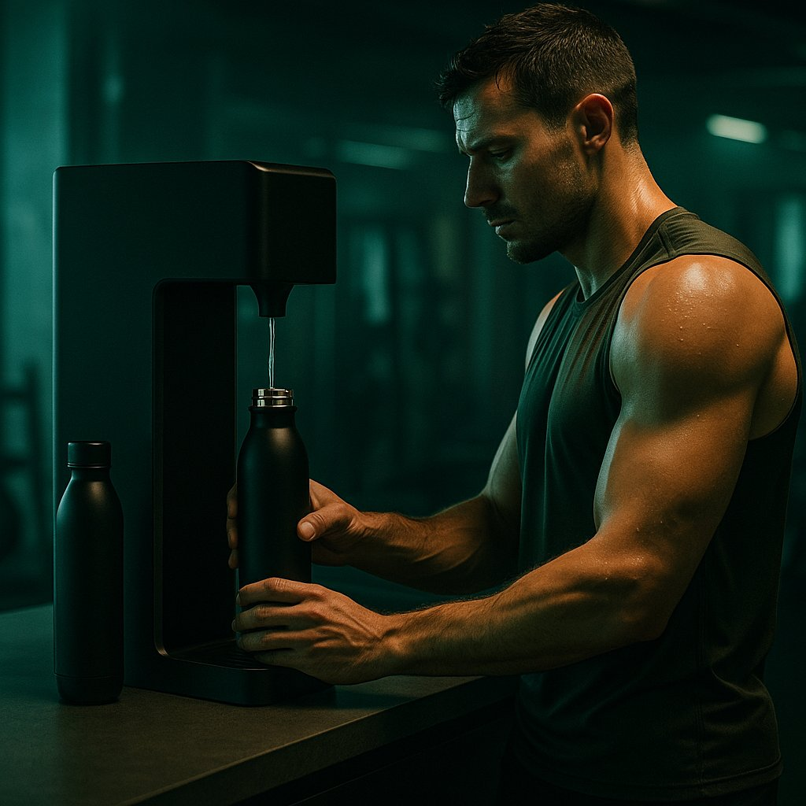

Do balneário dos campeões ao teu ginásio. Água hidrogenada fresca, produzida na hora — onde a hidratação e a recuperação se levam a sério.
A água hidrogenada chega cada vez mais ao alto rendimento — clubes de futebol profissional, ginásios e centros de treino que já a servem aos seus atletas.
O hidrogénio molecular é estudado há anos em contexto desportivo. Eis as áreas que a literatura científica tem explorado — apresentadas com honestidade, sem alegações de resultados.
Vários estudos investigam a relação do H₂ com a recuperação muscular após esforço intenso.
Investigação em atletas explora efeitos na perceção de fadiga e no desempenho em exercício.
O H₂ é descrito como antioxidante seletivo — daí o interesse em contextos de treino exigente.
Beber bem é meio caminho no desporto. A água hidrogenada é, antes de tudo, água de qualidade.
Uma amostra da investigação de 2024 em contexto desportivo — apresentada como é: achados, não promessas.
Uma revisão sistemática e meta-análise (2024) observou que a suplementação com H₂ antes do exercício aumentou o potencial antioxidante e se associou a menor perceção de fadiga e menor lactato no sangue.
Num ensaio aleatorizado, duplo-cego e controlado com nadadores de elite (2024), a água rica em hidrogénio foi estudada na recuperação entre duas sessões extenuantes no mesmo dia.
Num estudo de 8 dias em treino de resistência (2024), a HRW foi explorada como estratégia para a endurance muscular — com resultados que a investigação ainda está a consolidar.
Fontes: revisões e ensaios indexados em PubMed e nas revistas Frontiers in Physiology / Nutrition (2024).

Produção contínua de água hidrogenada fria e quente, até 2400 PPB. Para clubes, ginásios e centros de treino.
Ver ficha →Água hidrogenada onde quer que estejas: 8000 PPB certificados, bateria para 20+ ciclos, silicone anti-queda.
Ver ficha →A Water Please não faz alegações de saúde ou de desempenho. A informação sobre investigação tem caráter educativo e não constitui aconselhamento médico. Não existem, à data, alegações de saúde aprovadas pela EFSA / União Europeia para o hidrogénio molecular.
Diz-nos a dimensão da equipa e o espaço. Fazemos a avaliação e a proposta, sem compromisso.